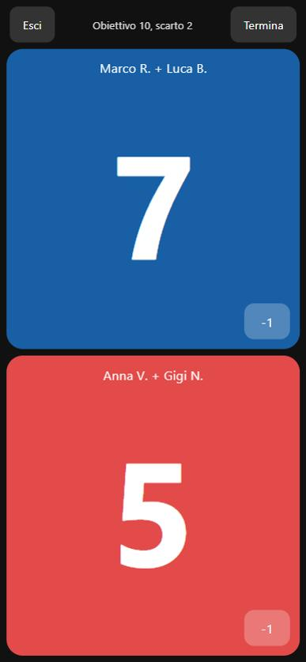
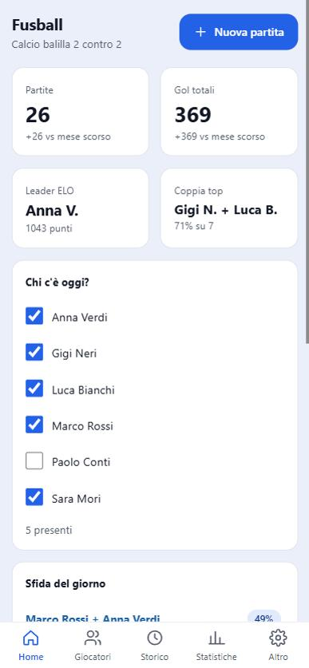
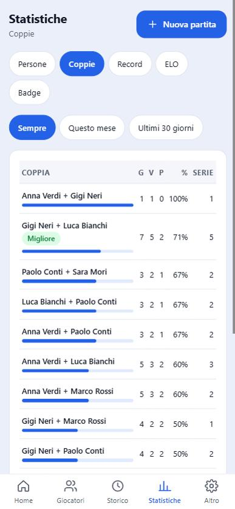
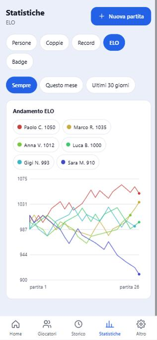

App
Fusball
Il calcio balilla con i numeri veri. Segni le partite 2 contro 2 con un tocco e scopri chi vince, con chi e quanto.




A cosa serve
A smettere di discutere su chi ha vinto di più. Scegli i quattro giocatori, parti col tabellone e a fine partita il risultato è salvato. Lo storico, le statistiche e la classifica si aggiornano da soli. Le schermate qui sopra sono un esempio con giocatori inventati.
Cosa puoi fare
Tabellone a schermo intero
Due quadrati grandi, blu e rosso, che si leggono anche da lontano. Obiettivo da 6 a 10 gol, scarto minimo e timer facoltativo di 5 o 10 minuti, con golden goal in parità.
Giocatori e storico
I giocatori si salvano da soli e si suggeriscono mentre scrivi. Lo storico si cerca per persona o coppia, e una partita sbagliata si può correggere o annullare.
Statistiche
Vittorie, serie, gol fatti e subiti per persone e coppie. I record: le partite più lunghe, più combattute e più nette.
Classifica ELO
Ogni giocatore ha un punteggio che sale e scende con i risultati, con il grafico dell'andamento.
Badge e podio del mese
In fiamme, Cappotto, Rimonta e altri badge da conquistare. Ogni mese il podio, il cannoniere e il muro.
Sfida del giorno
Dai presenti propone le squadre più equilibrate in base all'ELO, con la probabilità di vittoria. Oppure mescola le coppie a caso.
Chi può scrivere
Le partite le registra solo chi ha il PIN. Tutti gli altri possono entrare come ospiti, con lo stesso link, e guardare storico, statistiche e badge senza poter cambiare niente.
- Condividi il risultato di una partita come immagine.
- Esporta le partite e le statistiche in CSV, stampa la classifica in PDF o scarica un backup completo.
Funziona ovunque
Da telefono, tablet e computer, direttamente nel browser. Se vai in un posto senza rete, le partite restano in coda e si salvano da sole appena torna la connessione. Dal menu del browser puoi anche scegliere «Installa» per avere la sua icona.